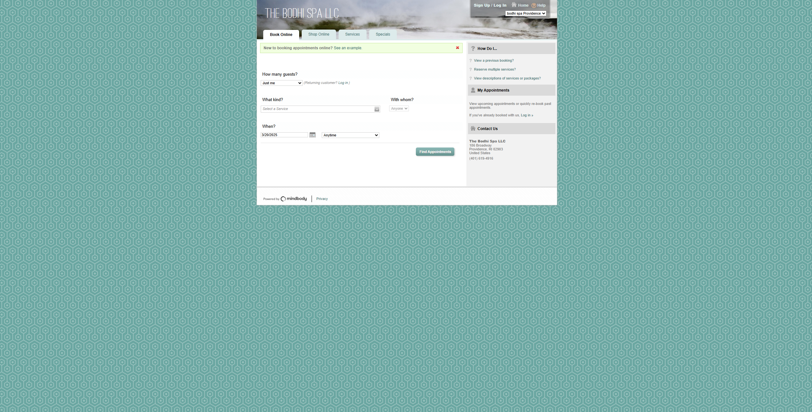
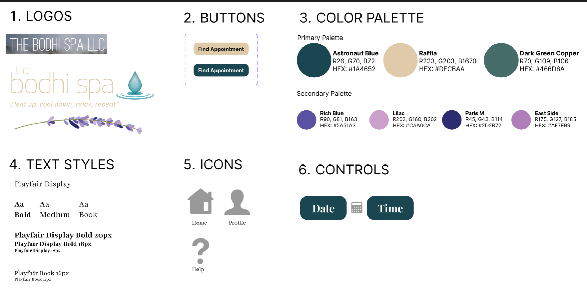

Welcome
Welcome to the Redesign Journey! The goal of this case study is to practice the workflow of redesigning a web page by using an existing design that could benefit from some changes...
Part 1: Identifying Usability Problems
Webpage
I recently visited this webpage and noticed a few areas that could use a sprinkle of redesigning for a better user experience. The design could be more optimal and comfortable, and I think it would really shine with some Responsive Redesigning. Below, you can see the current state of the page we're working with. Let's make it awesome together!

Usability Analysis
| Aspect | Details |
|---|---|
| Efficiency | The page is not intuitive and requires a lot of trial and error, which frustrates users and may drive potential clients away. |
| Learnability | The website is not easy to remember how to use, which is problematic for infrequent users. This can frustrate regular users who have to relearn the interface each time. |
| Memorability | Users might need to write down the correct order of actions. The existing guide is outdated and of poor quality, adding to user confusion. |
| Conceptual Model | The model makes sense but is outdated. The website looks like a basic booking page with necessary functionality but lacks modern design elements. |
Identified Problems..
- The website does not adapt to different screen sizes and remains fixed.
- Dropdown menus block other options.
- The booking website's style is inconsistent with the main website, leading to a lack of branding and a disjointed user experience.
- The font is tiny and difficult to read without significant zooming in.
WAVE Issues
- Very low contrast: Text is barely readable.
- Several empty buttons.
- Redundant title text.
- Missing alt text for images.
- Unordered lists.
- Device-dependent event handler.
- Missing label for select elements.
- No defined page regions.
- No ARIA lables found.
- Linked image missing alternative text.
Part 2: Visual Redesign
Mockups
Now that we know of the issues, let's use Figma to create the mockups of our screen, one for each of the screen sizes!
We will start with developing the style palette with main colors and elements for the redesigned webpage:
Now, let's move on to the mock ups for 3 different screen sizes: Phone, Tablet and Desktop! Click on the dropdown below to see a mock up for each
There are a few things that we will focus on redesigning.. You can see them above on the Figma mockups, but let's describe them in more detail!
- The quick tutorial is now has it's own section on the right-side help bar.
- Choosing the location is intuitive - it's the first step! Whether you're in Providence or Newport, the buttons are organized in a clear hierarchy, making it super easy to pick your destination. It's like having a magical map that leads you straight to relaxation.
- The service list is organized, allowing users to pick their desired service without any hassle. It's like having a menu of spa delights at your fingertips—just choose and enjoy! Users need to answer a few questions, intuitively, one after the other.
- Choosing a preferred staff member is now a delightful experience. The staff list is clearly displayed, after the choice of the procedure, allowing users to pick your favorite spa professional with ease.
- On phones, the Date and Time are split into separate rows, preserving the hierarchy from the desktop version. On tablets, the layout adjusts to fit the bigger screen, making the booking process seamless across all devices. Almost like the website is doing yoga to fit perfectly on any screen!
- The main booking button stands out, marking the final step of the process.
- For phone users, the "More info" section is placed at the bottom of the screen, saving space and keeping the layout tidy. Flexboxes ensure that the layout stays consistent, no matter the device.
- Finally, you can easily view bookings, contact the salon, change reservation, shop online, and explore services and specials. The website is now well-organized, ready to provide a great booking experience.
Part 3: Responsive Redesign
Based on the mockups, we will create the page using HTML and CSS...
Redesigned webpageTesting for Responsiveness and Accessibility
After using Chrome's "Toggle Device Toolbar", we can confirm that the redesigned webpage is repsonsive to devices of different sizes.
A few reflections after completing this case study...:
- Redesign is not easy! While we can be quick to judge "bad design" webistes and wish for a better look, when I actually tried to come up with a better idea, it ended up being quite challenging. I often thought that the original website was not that bad:)
- Figma Mock up != Webpage: I really liked the way my Figma prototypes looked. But when I put it on a webpage, it did not look as good as I intened it to.
- Part 1 frustrations has been adddressed successfully: new webpage has the color scheme that is in line with the business's main website, the contrasts are now clear and are passing the respective tests, there is clear hierarchy and the booking process is organized in a "follow the list" way. Learnability, Efficiency and Memorability are improved! And Wave Score is much better too!
Credits
Some resources worth mentioning..
- CS1300 Handout, Studios, Critique II
- geeksforgeeks article on creating nested webpage in HTML
- Web.dev's article on creative lists